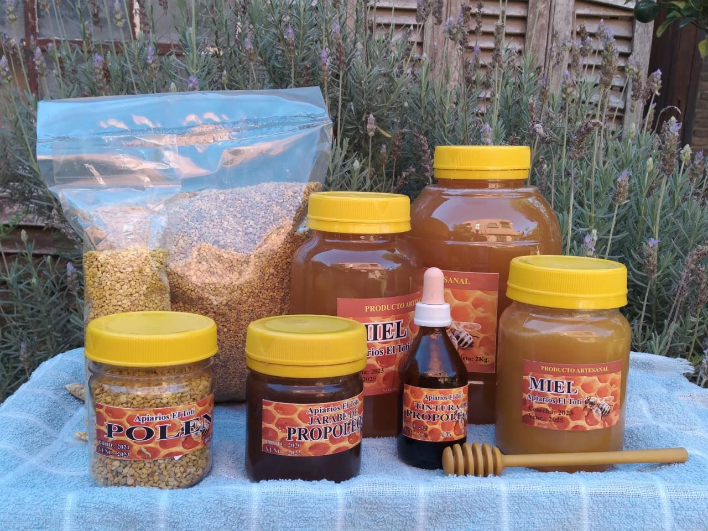

Más de 20 años cuidando nuestras colmenas para ofrecerte el verdadero sabor de la naturaleza. Sin agregados, solo oro líquido.

Sin pasteurizar ni procesos industriales. Directo de la colmena a tu frasco.
Nuestras abejas recolectan néctar de zonas libres de pesticidas.
Somos productores locales comprometidos con el medio ambiente.
Descubrí los secretos más fascinantes que pasan en la colmena clickeando la abeja.
¡Alrededor de 4 millones de flores! Las abejas deben volar una distancia equivalente a dar la vuelta al mundo cuatro veces.
No, la miel no se echa a perder nunca. Se han encontrado vasijas con miel en tumbas egipcias de hace 3000 años ¡y aún era comestible!
Es un superalimento repleto de proteínas, vitaminas (A, B, C, E) y minerales. Es ideal para fortalecer el sistema inmunológico, darte energía natural, mejorar tu digestión y por su acción antiinflamatoria.
EL color, sabor y aroma de la miel se corresponde con la floración visitada por las abejas. Por ejemplo, pueden ser mieles claras y con poco aroma de pradera, u oscuras y muy aromáticas de monte.
¡Es el escudo protector de la colmena! Actúa como un potente antibiótico y antiviral natural. Refuerza tus defensas, alivia rápidamente afecciones respiratorias (resfriados, faringitis) y destaca por su gran poder antiinflamatorio, fungicida y cicatrizante.
Es un proceso natural de la mayoría de las mieles que sucede normalmente en otoño e invierno. Si se cristaliza, significa que no fue adulterada ni expuesta a altas temperaturas.
¡Sí! Duermen entre 5 y 8 horas por día, generalmente de noche. Al igual que nosotros, relajan todo el cuerpo y bajan las antenas para descansar.
No, los zánganos (los machos de la colmena) no tienen aguijón. Tampoco recolectan néctar ni producen cera; su única misión es fecundar a la reina y ayudar a mantener la temperatura de la colmena.
Sí, la colmena es uno de los lugares más estériles y limpios de la naturaleza. Existen abejas encargadas exclusivamente de la limpieza que sacan cualquier residuo o suciedad inmediatamente hacia el exterior.